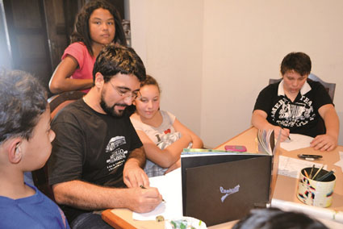
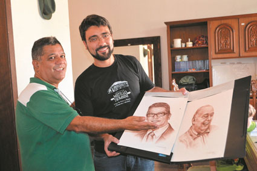

Daniel Conrade deixa rico legado de obras perpetuadas no mundo da arte
Por Redação JB Litoral
26/01/2017 16:32
Filho de família que vivia da agricultura familiar na cidade de Morretes, criado no assentamento Nhundiaquara, pertinho do Rio Marumbi, o artista plástico Daniel Conrade, aos 34 anos, faleceu na sexta-feira (20) deixando um rico legado de obras que perpetuará seu talento nos grandes centros de arte no mundo, principalmente nos Estados Unidos da América (EUA) e Paris, na França.
Nascido com o dom da arte, Conrade era ilustrador, ilustrador científico, artista naturalista, poeta, percussionista, caricaturista e o melhor desenhista indígena do país.
Humilde, o artista não admitia que o traço mágico que fez surgir as impressionantes obras, não se tratava de um dom natural e sim da sua enorme vontade e paixão em desenhar, nascida ainda quando criança, aos oito anos de idade. Precoce, o artista plástico, aos 17 anos já estava com uma exposição, em nanquim, nos EUA, na Galeria Mirtillo Trombini, onde começou seu aprendizado.
A relação muito forte com a beleza natural do Marumbi sempre o inspirou na temática de seu trabalho. Voltado para a pintura naturalista, principalmente a Floresta Atlântica, que sempre foi o tema mais forte do seu trabalho, vínculo nascido desde pequeno, fruto do contato direto com a natureza.

Ensinar sua arte aos jovens sempre foi a segunda paixão de Conrade. Foto/JB
Foram poucos os gênios no país e no mundo, que conseguiram desenvolver a temática indígena como Daniel Conrade, os traços em seu trabalho com di9stração antropológica chegavam perto da perfeição.
Galeria de prefeitos de Morretes
O retrato em crayon, porém, sempre foi um dos pontos fortes do artista que ganhou admiradores em todas as áreas da sociedade, inclusive na política. O Prefeito Helder Teófilo dos Santos, em sua primeira gestão, pediu para Conrade criar a galeria dos prefeitos de Morretes, todos em preto e branco. Uma obra que, por muitos anos, ilustrou o acesso ao gabinete dos parlamentares que comandaram a cidade. Entretanto, na gestão de Amilton de Paula, um crime cometido contra a cultura, quase pôs fim a esta obra histórica. A galeria foi retirada, jogada em um canto da prefeitura, pegou fungos e estava apodrecendo. Indignado com a atitude, o prefeito disse que iria recuperá-las em sua gestão. Algo que o JB irá checar na próxima semana. Até porque, o Prefeito Helder incorreu no mesmo crime cultural, conforme denúncia da Vereadora Flavia Rebello no ano passado.

Em 2013, em razão da homenagem que o Jornal dos Bairros fez ao empresáio Joel Moreira Bonzato com a ilustração de seu rosto no layout do Troféu Imprensa de Paranguá, coube ao artista assinar a gravura que ficou eternizada na homenagem aos melhores do ano de 2013.
Entrevista ao JB
Em abril de 2013, Daniel Conrade concedeu entrevista exclusiva ao JB, por conta da sua contratação para criar a gravura do empresário Joel Bonzato, onde falou da carreira e de sua vida. Ele contou que tudo o que sabia, aprendeu com sua primeira professora, a também morretense, Isaurina Maria, a Sarika, uma das principais pintoras de pássaros do Brasil, em extração Ornitológica. Moradora perto da Estação Porto de Cima, na montanha, Sarika foi considerada, em Brasília, como uma das maiores do Brasil.
Na época, falour dos seus desenhos de nanguim enviados para Chigado, nos EUA, e em Paris.
Além de criar obras de arte, outra paixão do artista era ensinar. Ele dizia ter uma enorme felicidade e satisfação de ensinar crianças, adolescentes e jovens.
Nos planos para o futuro, Conrade não vislumbrava levar seu talento para fora do país ou mesmo no eixo Rio-São Paulo, ele só queria concluir a faculdade de Belas Artes e permanecer em Morretes.
"Pretendo permanecer aqui, pois percebi que tenho encontrado mais abrangência e um leque muito maior de oportunidades. Às vezes a gente tem essa ilusão de sair daqui e explorar horizontes", finalizou o artista que foi sepultado no sábado (21) em sua cidade natal.
REFERÊNCIA:
|